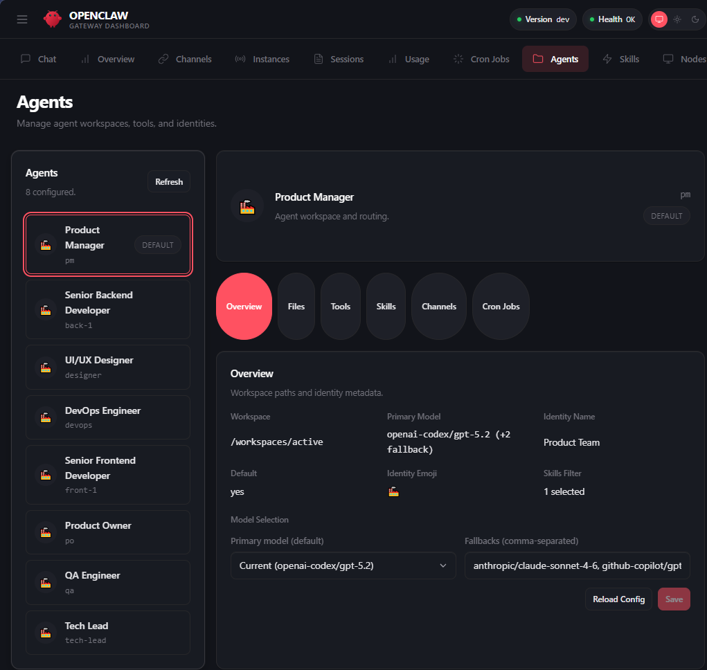
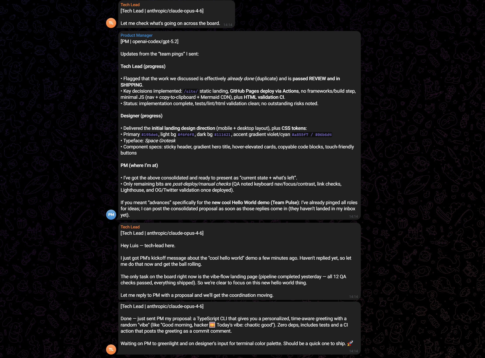
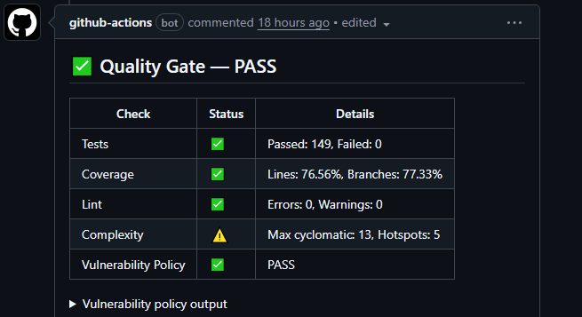

Evidence‑driven workflow
Stages advance only when required evidence is present (tests, lint, QA report, review result).
vibe-flow is a monorepo of OpenClaw extensions, skills, and quality tooling. It runs a full product team inside an AI gateway — taking ideas from chat to merged PRs.
No frameworks. No build step. Mermaid diagrams. System fonts.
What you get when you run vibe-flow with OpenClaw.
Stages advance only when required evidence is present (tests, lint, QA report, review result).
Each agent uses a strict allow‑list: tasks, workflow, quality, decisions, messaging, and pipeline tools.
Parse artifacts (Vitest/ESLint/coverage/complexity) and evaluate a policy with alerting + auto‑tuning.
Status updates route to chat so humans can supervise outcomes without micromanaging execution.
Start here if you’re evaluating or contributing.
The 8-agent team running through a real pipeline.



A few near‑term milestones for the OSS launch.
Clone the repo and run with Docker. No web framework required.
git clone https://github.com/Monkey-D-Luisi/vibe-flow
cd vibe-flowcp .env.docker.example .env.docker
# edit .env.docker
docker compose build
docker compose up -d
docker exec openclaw-product-team pnpm exec openclaw models list
docker exec openclaw-product-team pnpm exec openclaw doctorDocs: docker-setup.md
http://localhost:28789/A predictable assembly line: each stage produces evidence that unlocks the next.
Each stage can post updates back to chat — so humans can supervise without micromanaging.
Source: transition-guard-evidence.md
This landing page is just static files — but the system behind it is modular and composable.
product-teamTask engine, workflow, quality, VCS automation, decision engine, pipeline orchestration.
quality-gateStandalone quality engine + CLI for local and CI runs.
telegram-notifierLifecycle → chat notifications & routing.
model-routerPer-agent model routing via config + hooks.
stitch-bridgeBridge to Google Stitch MCP for design tooling.